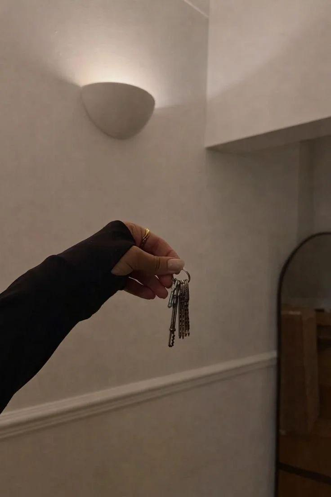

01INTERIOR
INTERIOR
TURNKEY SOLUTION
A complete design and execution service, managing every stage from concept development and planning to material selection, site coordination and final handover. We ensure your vision is translated into reality with a considered, cohesive process.